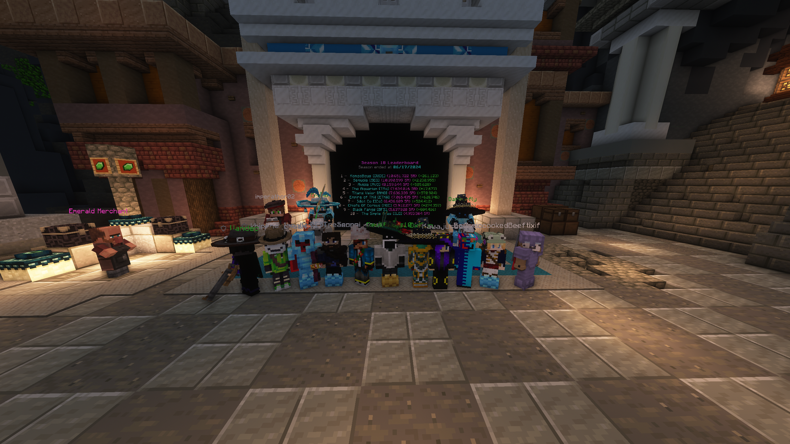

Guild History
Shardo creates the Black Fangs guild
A small alliance formed between BFS, KnightOfValor and The Blues. However, after a while, The Blues disbanded and a technical glitch left BFS without Shardo's control. Most of BFS's members joined KnightOfValor.
Shardo and Dandiam decided to honour the legacy of BFS by creating a new guild, Fangs Reborn. Soon, they were invited to join another alliance - Seraphim. Despite the offer, Shardo eventually disappeared, eager to claim back the original Black Fangs.
By this time, Shardo had joined the military but was still eager to revive BFS. He discovered that a deceased friend had become the new owner of BFS so seized this opportunity to become owner once again. However, military duty made it impossible to revive it fully.
After completing his military service, Shardo sought to revive BFS. He began recruiting new members and the guild became a tight-knit community. Despite their efforts, the guild struggled to gain significant reputation. Shardo handed over ownership to w1n4p2c00k3.
Uandec, a dedicated member, took initiative to expand the guild. He was given ownership and BFS saw rapid growth. Shardo, now back and collaborating with Uandec, helped set the stage for the guild's future. However, eventually, Uandec stepped down, giving ownership to Shardo until a new owner was elected.
A new owner, OxiGun, was elected to lead the guild into the future.
e
e
Guild Gallery (proof of concept, need images)
